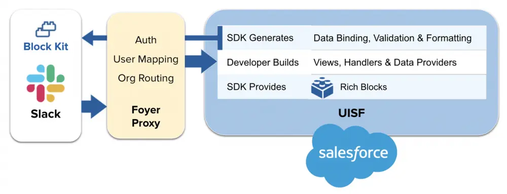

Me
- Mobile Technical Architect @ Caddify
- London Dev Group organiser
- London's Calling organiser
- Salesforce MVP
- Founder of Shirtforce

Building Custom Slack Apps
- What, Why, and when (and when not to)
- What Slacks offer us
- Architecture
- Building an app
- The future
What are slack apps, exactly?


Why, and When
- Cos it's Salesforce now :)
- It's where your users are
- Useful for "Thin" work
- Not for complicated UI / mass of data
Slack Development
-
What do we have to play with?
- UI Elements
- Listeners
- APIs


Images: https://dev.slack.com/
Slack Development
-
How do we access these things?
- Block Kit
{
"blocks": [
{
"type": "header",
"text": {
"type": "plain_text",
"text": "This is a header block",
"emoji": true
}
},
{
"type": "divider"
},
{
"type": "section",
"text": {
"type": "mrkdwn",
"text": "New Paid Time Off request from \n\n"
}
},
{
"type": "section",
"text": {
"type": "mrkdwn",
"text": "Pick a date for the deadline."
},
"accessory": {
"type": "datepicker",
"initial_date": "1990-04-28",
"placeholder": {
"type": "plain_text",
"text": "Select a date",
"emoji": true
},
"action_id": "datepicker-action"
}
},
{
"type": "actions",
"elements": [
{
"type": "button",
"text": {
"type": "plain_text",
"text": "Click Me",
"emoji": true
},
"value": "click_me_123",
"action_id": "actionId-0"
}
]
}
]
}
Slack Development
-
How do we access these things?
- Bolt SDK
const whoamiCallback = async ({ shortcut, ack, client }) => {
await client.views.open({
trigger_id: shortcut.trigger_id,
view: whoAmIResponse(
conn.instanceUrl,
currentuser.username)
});
};
module.exports.register = (app) => {
app.shortcut('who_am_i', whoamiCallback);
};
Our use case
- Our customers create mobile apps
- They want a dashboard for marketing
- App installs
- Rating
- See latest reviews
Architecture

Image: https://developer.salesforce.com/blogs/
The Salesforce Slack Starter Kit
.
├── apps
│ └── salesforce-slack-app
├── force-app
│ └── main
├── package.json
├── README.md
├── scripts
│ ├── deploy.js
│ └── templates
└── sfdx-project.json
Deploy script
- Salesforce
- Creates a scratch
- Objects for Auth
- Connected App
- Creates a Heroku app
- Creates a whole load of keys
Back to our app

Back to our app
Listen for our app's Home being opened
module.exports.register = (app) => {
app.event('app_home_opened', appHomeOpenedCallback);
};
Query for data, using jsforce
const queryListingSummaries = async (connection) => {
// Query for store listing summary
const result = await connection.query(
`SELECT OS__c, Total_Downloads__c, ...
FROM Listing_Summary__c
ORDER BY CreatedDate DESC LIMIT 10`
);
return result;
}
Back to our app
Build our Block Kit JSON
const { HomeTab, Blocks, Elements, Md, Actions }
= require('slack-block-builder');
const dashboardScreen = (listingSummaries) => {
const homeTab = HomeTab().blocks(
Blocks.Header({ text: `App Store Listing Summaries` })
);
const listingArray = listingSummaries.records.map(
osEmoji(listing, requestIndex) => {
let listingText = `${Md.bold(listing.OS__c)}\n`;
...
return listingText;
}
homeTab.blocks(Blocks.Section().fields(listingArray));
return homeTab.buildToJSON();
}
Local development
- Our Heroku app, is a node app
- ngrok - route a public IP to our localhost
- Configure Slack + Salesforce
- Run locally
- Debug in VSCode
The Future - Foyer
The Future - Apex SDK for Slack
- No need for Middleware
- User <-> User Auth
- Currently Closed Pilot (partners)
- Open Pilot in June, Beta in Winter
- Packageable
- Does NOT impact API calls (hopefully)
App Home Opened - Event Dispatcher
public class EventDispatcherAppHomeOpened extends
Slack.EventDispatcher {
...
public class Handler implements Slack.RunnableHandler {
public void run() {
Slack.ViewReference viewReference =
Slack.View.app_home.get();
...
Slack.ViewsPublishResponse response =
botClient.viewsPublish(req);
}
}
...
}
Data Provider
public with sharing class DataProviderReview {
public static List<Review__c> getReviews() {
List<Review__c> reviews =
[SELECT Id, Name, Date__c, ...
FROM Review__c
ORDER BY Date__c DESC LIMIT 5];
return reviews;
}
}
View Definition
dataproviders:
review:
definition: "apex__DataProviderReview.getReviews"
components:
- definition: home
components:
- definition: header
properties:
text: "Recent reviews"
- definition: iteration
properties:
foreach: "{!review}"
foritem: "review"
components:
- definition: section
properties:
text:
text: "{!IF(review.OS__c == 'iOS',\
':apple:', \
':robot_face:')} \n
*Review:* {!review.Content__c}"
type: mrkdwn
The same outcome - a lot less code
Wrap-up
- You can start building today
- Huge focus from Salesforce
- Great set of tools available
- It's going to get a lot easier
- Start thinking about your use-cases
Resources
- CodeLive video serieshttps://www.youtube.com/watch?v=vhb5ZS5T73s
- Salesforce Slack Starter Apphttps://github.com/developerforce/salesforce-slack-starter-kit
- Ready to Fly Apphttps://developer.salesforce.com/blogs/2022/02/building-a-slack-app-that-integrates-with-salesforce-part-1-architectural-overview
- Partner Slack Chatter Grouphttps://partners.salesforce.com/_ui/core/chatter/groups/GroupProfilePage?g=0F94V0000002Bv7
- Slack Dev Docshttps://slack.dev/